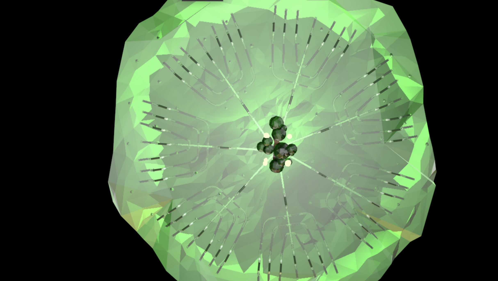
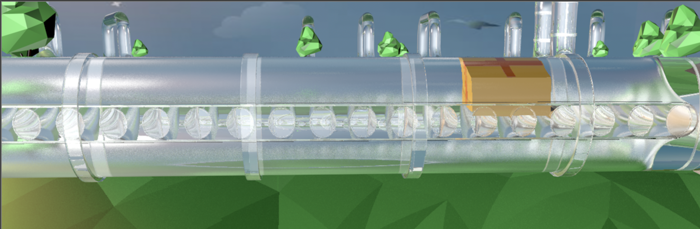
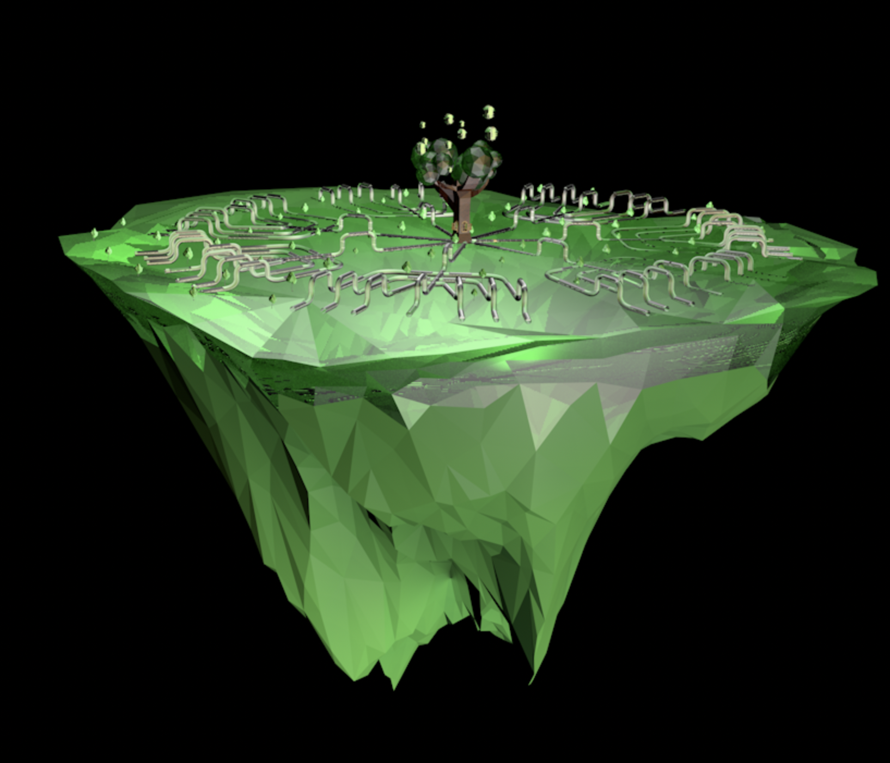

Fully Automatic Station
Motive
With the development of society, the drawbacks of logistics are gradually exposed, including but not limited to the following problems. First is the low efficiency of logistics: as logistics business needs to deal with a large number of orders, commodities and transportation routes, there are many links and transitions in the logistics process, and these links and transitions may lead to inefficient logistics. Secondly, logistics information is not transparent: as logistics business involves different logistics enterprises, warehousing and transportation, it is difficult to integrate and share information between information flow and logistics, which leads to non-transparent logistics information and makes it difficult to realize comprehensive monitoring and management of logistics process.Thirdly, the logistics cost is high: as the logistics business requires the use of a large amount of manpower, materials andequipment, as well as facing different geographical, climatic and traffic conditions, the logisticscost is very high, which is a considerable burden for both merchants and consumers.
-panoramic
-pipeline detail drawing I think
Detail
To solve these problems, a direct home delivery service from a post could be a good solution. This requires a delivery point that can cover the whole area within a region, so that the dense coverage is similar to the huge root system of the tree, and the root system also takes on the function of transporting nutrients for the whole tree. The branch part of the tree can be used as a distribution center and transit station for logistics, where orders and goods are centrally managed and sorted, and then delivered directly to the door through the roots, which can greatly improve logistics efficiency, reduce transit links and shorten logistics time. In addition, as the post station can realize the integration and sharing of logistics information, it can improve the transparency of logistics information, improve logistics efficiency and reduce logistics cost.
-full veiw

-express delivery inside the pipe
—motion